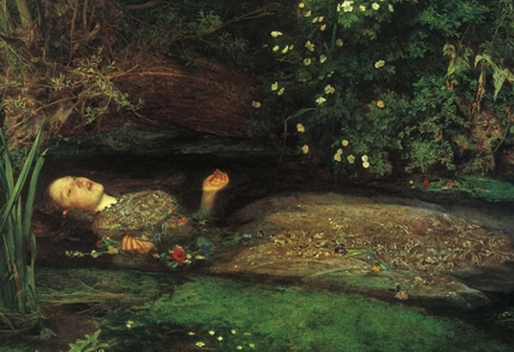

Home > Today's Painting
오필리어 - 존 에버렛 밀레이
- 1851-1852 | 캔버스에 유채물감 | 76×112cm | 영국 런던, 테이트 컬렉션
- 
이 작품은 라파엘 전파의 가장 유명한 그림 중 하나이며 이 그룹의 젊은 혈기가 절정에 달했을 때 그려졌다. 라파엘 전파의 양식은 꼼꼼한 디테일 묘사와 시적인 상징주의에 대한 사랑을 특징으로 한다. 셰익스피어는 모든 라파엘 전파 화가들에게 영감의 원천이었다. 존 에버렛 밀레이(1829-1896)는 이 그림에서 햄릿의 한 장면, 즉 사랑하는 사람이 그녀의 아버지를 죽이고 난 후, 오필리어가 강에 몸을 던져 스스로 목숨을 끊는 모습을 묘사하였다. 셰익스피어는 정신이 나간 오필리어의 상태를 강조하기 위해 여러 종류의 꽃(각각의 꽃은 적절한 상징의미를 갖는다)을 스스로 꽂은 그녀를 묘사하였다. 밀레이는 셰익스피어의 묘사를 따라 꽃을 식물학적으로 정확하게 묘사하고 빅토리아 시대의 꽃말에서 다른 예를 추가하면서, 팬지(헛된 사랑), 제비꽃(충절), 쐐기풀(고통), 데이지(순수), 페즌트 아이(슬픔), 물망초와 양귀비(죽음)를 그려 넣었다. 죽음은 해골처럼 보이는 오른쪽의 나뭇가지로도 암시되는데, 이는 오필리어의 죽음을 암시하는데 그치지 않고 햄릿이 요릭의 해골을 발견하는 유명한 무덤 장면을 나타내기도 한다. 정확한 묘사에 대한 밀레이의 집념은 꽃에 국한되지 않았다. 그는 영국 서리 혹스밀 강 근처에서 네 달 동안 그림의 배경을 그렸으며 그의 모델(후에 단테 로세티의 아내가 되었던 리지시달)도 이 작품을 위해 고통을 참아야만 했는데, 몇 주 동안 그녀는 많은 램프들로 데워진 물이 가득 채워진 욕조 속에서 포즈를 취했어야만 했다.
출처:죽기 전에 꼭 봐야 할 명화 1001점(마로니에북스)